✅ 1. Подключение к серверу по SSH
Что происходит: С помощью клиента PuTTY (или терминала) устанавливается SSH-соединение с сервером kubsu-dev.ru по логину u82461. После успешной аутентификации отображается приветственное сообщение Ubuntu и приглашение командной строки. На скриншотах показан процесс настройки PuTTY (ввод адреса сервера, выбор порта SSH) и результат входа в систему.
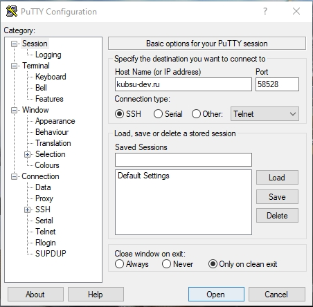
kubsu-dev.ru, тип соединения — SSH.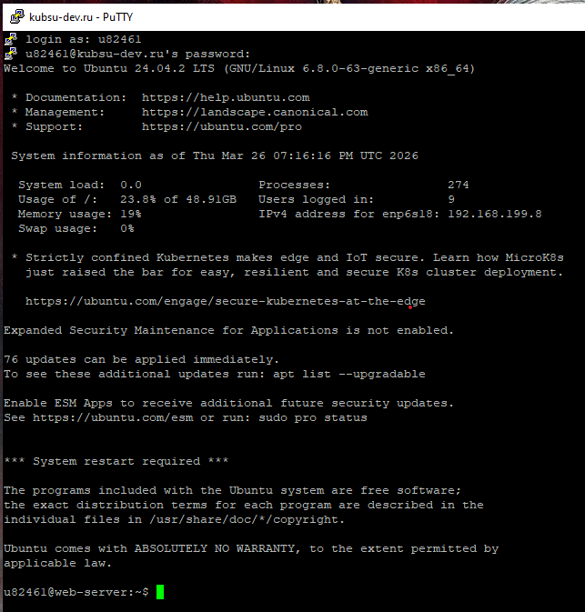
u82461@web-server:~$.✅ 2. Определение IP-адреса kubsu.ru с помощью ping
Что происходит: Команда ping -c 4 kubsu.ru отправляет 4 ICMP-пакета на сервер kubsu.ru. В ответе виден IP-адрес 185.13.84.92, а также статистика времени отклика. Скриншот демонстрирует успешные пинги и нулевую потерю пакетов.
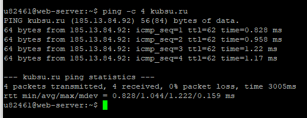
185.13.84.92. Время отклика ~1 мс.✅ 3. A-записи и MX-записи доменов (nslookup)
Что происходит: Утилита nslookup используется для получения DNS-записей. Для домена kubsu.ru получены A-запись (IP) и MX-записи (почтовые серверы). Для домена kubsu-dev.ru также получена A-запись, а MX-записи отсутствуют (запись не найдена, но есть SOA-информация).
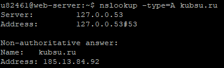
185.13.84.92.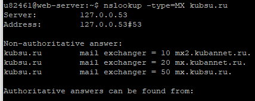
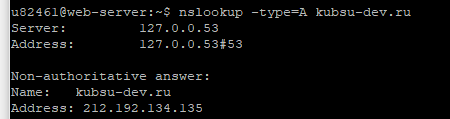
212.192.134.135.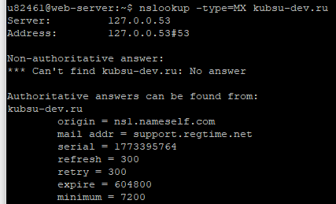
✅ 4. Дата регистрации доменов (whois)
Что происходит: Команда whois отображает информацию о регистрации домена. Для kubsu.ru дата создания — 1998-03-28, оплачено до 2026-04-30. Для kubsu-dev.ru дата регистрации — 2020-02-12, оплачено до 2027-02-12. Также видны NS-серверы и контактные данные.
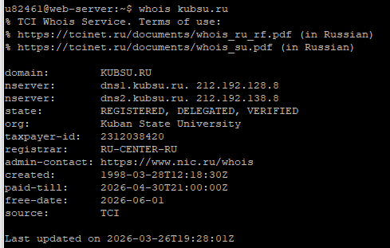
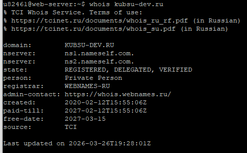
✅ 5. Создание веб-страницы, работа с Git и размещение на сервере
Что происходит: На локальной машине инициализирован Git-репозиторий, добавлены все скриншоты (1–9.png) и сделан коммит. Создан аккаунт на GitHub, добавлен SSH-ключ для безопасного доступа. Затем репозиторий склонирован на учебный сервер, файлы скопированы в каталог ~/www/hw1, что обеспечивает доступность страницы по адресу http://u82461.kubsu-dev.ru/hw1/
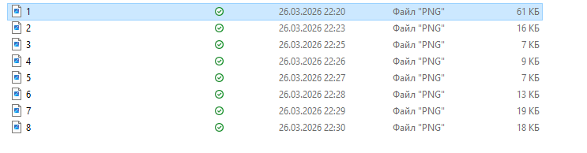
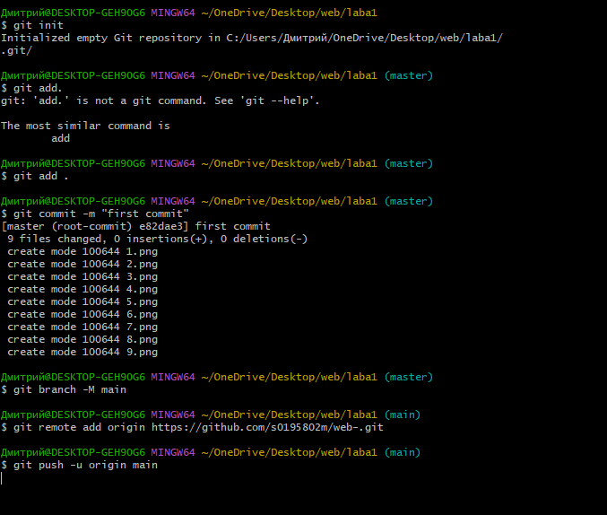
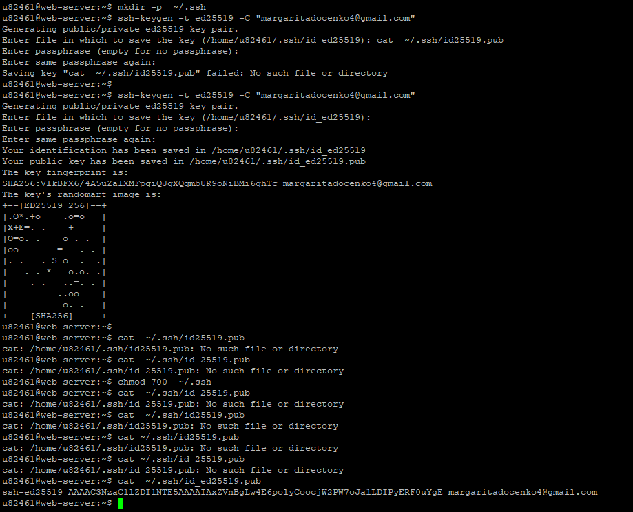
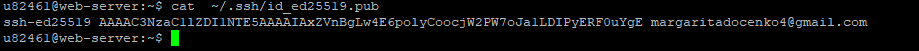
id_ed25519.pub, использованного для GitHub.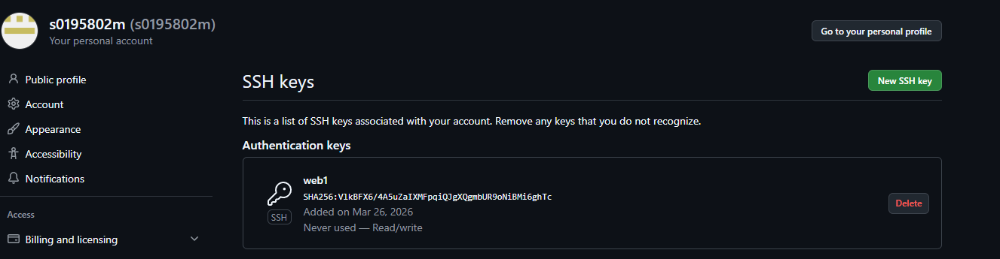
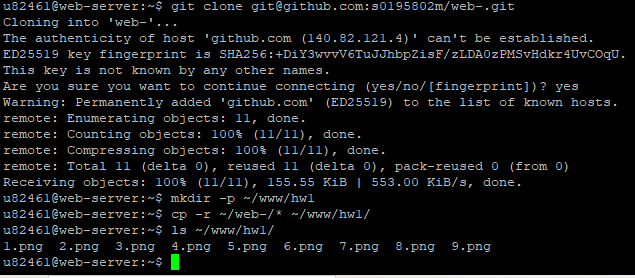
git clone git@github.com:...), создание каталога ~/www/hw1 и копирование файлов скриншотов.✅ 6. Скачивание файлов с сервера через SFTP (FileZilla)
Что происходит: С помощью SFTP-клиента FileZilla установлено соединение с сервером kubsu-dev.ru по порту 58528 (как указано в задании). После успешной аутентификации из удалённого каталога /home/u82461/www/hw1 на локальный компьютер были скопированы все файлы задания. На скриншотах показан
процесс подключения, отображение удалённого каталога и результат успешной передачи файлов.
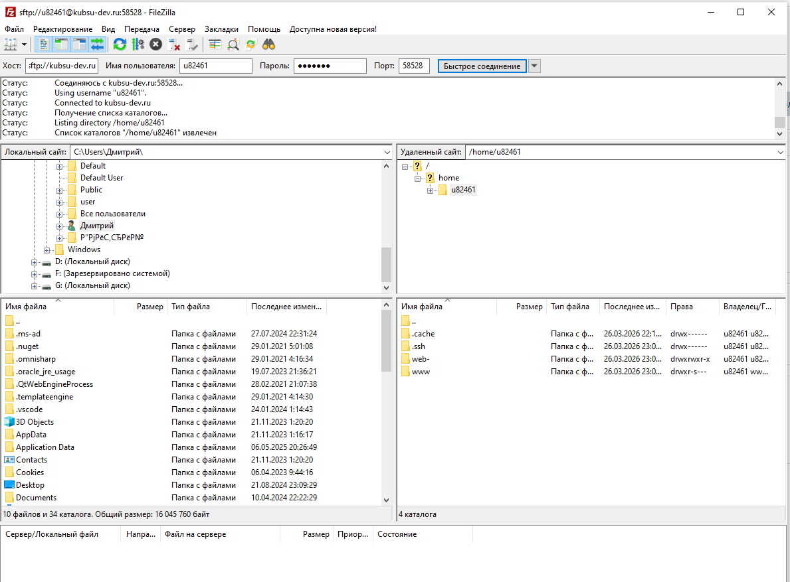
kubsu-dev.ru, порт 58528, имя пользователя u82461.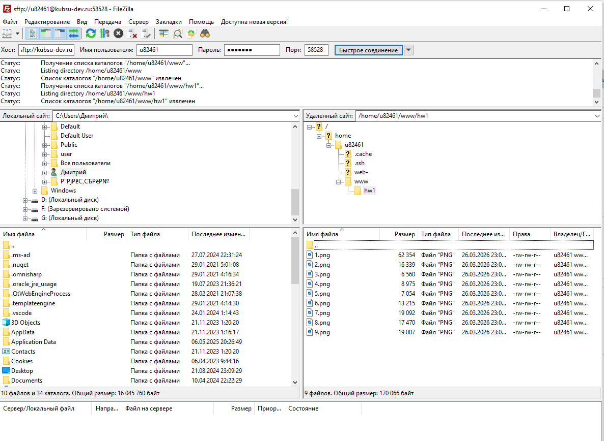
/home/u82461/www/hw1/ содержит файлы 1.png … 9.png.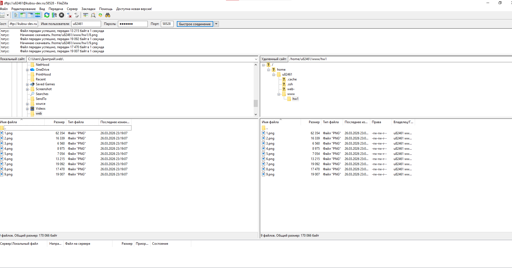
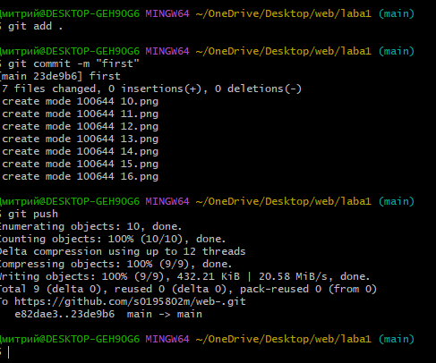
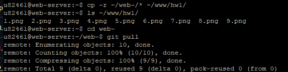
git pull для получения актуальной версии. Затем файлы скопированы в ~/www/hw1 для обновления сайта.